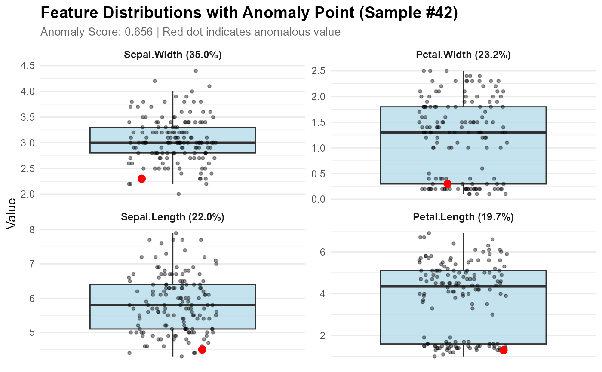
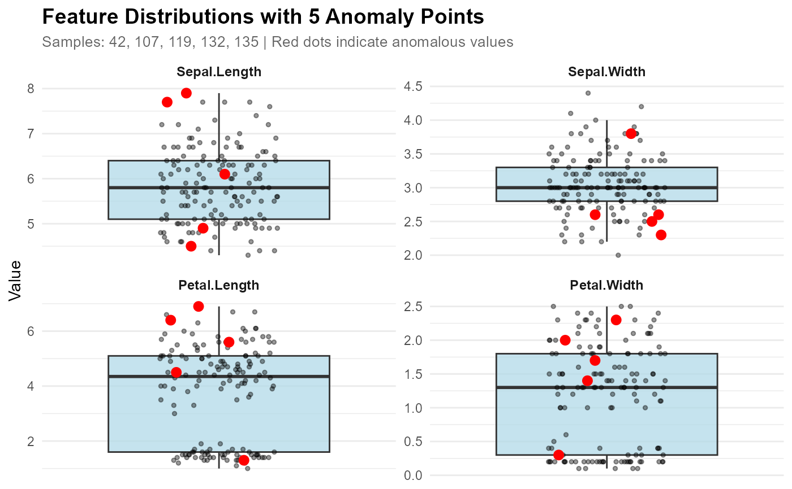

Plot anomaly boxplot with faceted feature distributions
Source:R/anomaly_plot.R
plot_anomaly_boxplot_faceted.RdCreate faceted boxplots for better comparison when many features are involved. All data points are shown as small black dots, with the anomalous point(s) highlighted in red for easy identification. This is useful when top_n is large or you want to see all features. Can work with or without a contribution object.
Usage
plot_anomaly_boxplot_faceted(
contribution_obj = NULL,
data,
sample_id = NULL,
top_n = 8,
ncol = 2,
highlight_color = "red",
highlight_size = 3,
scales = "free_y"
)Arguments
- contribution_obj
A feature_contribution object from feature_contribution(), or NULL. If NULL, you can specify multiple sample_ids to highlight multiple anomalies.
- data
The original training data
- sample_id
The sample ID(s) to visualize. Can be a single value or a vector.
If contribution_obj is provided: only single value is used
If contribution_obj is NULL: can be a vector to mark multiple anomalies
If NULL and contribution_obj provided: uses first sample from contribution_obj
- top_n
Number of top contributing features to display (default 8, NULL for all)
- ncol
Number of columns in facet grid (default 2)
- highlight_color
Color for the anomaly point(s) (default "red")
- highlight_size
Size of the anomaly point(s) (default 3). Automatically adjusted to 1 when >5 anomalies are highlighted
- scales
Should scales be fixed ("fixed") or free ("free", "free_y")? Default "free_y"
Examples
# With contribution object
model <- isoForest(iris[1:4])
contributions <- feature_contribution(model, sample_ids = 42, data = iris[1:4])
plot_anomaly_boxplot_faceted(contributions, iris[1:4], sample_id = 42)

# Without contribution object - mark multiple anomalies
anomaly_ids <- c(42, 107, 119, 132, 135)
plot_anomaly_boxplot_faceted(NULL, iris[1:4], sample_id = anomaly_ids)
